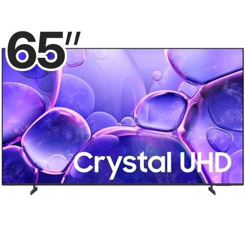

삼성전자 Samsung
KR · 대한민국 · 글로벌 종합가전, 비스포크 · 대표 제품: 비스포크 냉장고, 그랑데 세탁기, 제트 청소기
추천 제품 8종 2026.11.23 MON · No.002 기준
 삼성 비스포크 AI 스팀 울트라 VR90F01AAG1,493,460원청소 · 다나와 로봇청소기 인기 2위 · CES 2026 AI 기능 · 소싱 점수 3.0
삼성 비스포크 AI 스팀 울트라 VR90F01AAG1,493,460원청소 · 다나와 로봇청소기 인기 2위 · CES 2026 AI 기능 · 소싱 점수 3.0 삼성 갤럭시탭S11 128GB1,109,290원태블릿 · 다나와 태블릿 인기 1위 · 소싱 점수 3.0
삼성 갤럭시탭S11 128GB1,109,290원태블릿 · 다나와 태블릿 인기 1위 · 소싱 점수 3.0 삼성 비스포크 AI 콤보 세탁건조기 WD80H25BHW2,610,710원대형가전 · 다나와 올인원 세탁건조기 인기 2위 · 소싱 점수 2.5
삼성 비스포크 AI 콤보 세탁건조기 WD80H25BHW2,610,710원대형가전 · 다나와 올인원 세탁건조기 인기 2위 · 소싱 점수 2.5 삼성 스마트TV KU43F6050FFXKR 43인치395,640원TV · 다나와 TV 인기 7위 · 소싱 점수 2.5
삼성 스마트TV KU43F6050FFXKR 43인치395,640원TV · 다나와 TV 인기 7위 · 소싱 점수 2.5 삼성 갤럭시S26 256GB 자급제1,118,920원스마트폰 · 다나와 휴대폰 인기 2위 · 소싱 점수 2.5
삼성 갤럭시S26 256GB 자급제1,118,920원스마트폰 · 다나와 휴대폰 인기 2위 · 소싱 점수 2.5
삼성 Crystal UHD KU65UF8000FXKR 65인치1,048,500원TV · 삼성 65인치 4K 스마트TV · 소싱 점수 2.0 삼성 갤럭시북6 프로 NT960XJG-KC51G2,689,990원노트북 · 다나와 AI 노트북 인기 16위 · 소싱 점수 2.0
삼성 갤럭시북6 프로 NT960XJG-KC51G2,689,990원노트북 · 다나와 AI 노트북 인기 16위 · 소싱 점수 2.0 삼성 갤럭시 버즈3 프로 SM-R630N219,000원이어폰 · 다나와 무선 이어폰 인기 11위 · 소싱 점수 2.0
삼성 갤럭시 버즈3 프로 SM-R630N219,000원이어폰 · 다나와 무선 이어폰 인기 11위 · 소싱 점수 2.0
관련 뉴스
- 삼성·LG, 로봇 ‘손’과 ‘두뇌’ 개발 경쟁
삼성은 7월 RX 태스크포스를 꾸리고 구미에 로봇 데이터 팩토리를 계획. LG는 액추에이터 ‘액시엄’ 창원 시범 라인을 가동했습니다.
2026.11.10 · 뉴스토마토 - 레인보우로보틱스, 바퀴 달린 양팔로봇 RB-Y2 공개
삼성전자가 최대주주인 레인보우로보틱스가 로보월드 2026에서 제조 현장용 이동형 양팔로봇을 선보였습니다.
2026.11.06 · 비즈워치 - 미국 블프 TV 특가: 삼성 더 프레임 65형 999.99달러
블랙프라이데이(11/27)를 앞두고 2026년형 더 프레임 65형이 500달러, 더 프레임 프로 85형이 1,000달러 내렸습니다.
2026.11.16 · MacRumors - 3분기 TV 출하 2·3위 TCL 748만 대·하이센스 745만 대
트렌드포스 집계로 1위 삼성(840만 대)과의 격차는 100만 대 안쪽입니다. 올해 RGB 미니LED TV 출하는 200만 대를 넘을 전망입니다.
2026.11.16 · TrendForce - 3분기 스마트폰 출하 −20%, 삼성 5,780만 대로 1위
옴디아 집계 세계 출하 2억 5,470만 대로 3분기 기준 2013년 이후 최저. 삼성 점유율은 19%에서 23%로 올랐습니다.
2026.10.29 · 위키트리 - 갤럭시 S27, 일반·플러스·프로·울트라 4종 전망
외신은 주요 부품이 확정됐고 일반·플러스에 엑시노스 2700이 들어간다고 전했습니다. 삼성 공식 발표는 아닙니다.
2026.10.19 · SamMobile - 3분기 TV 출하 4,794만 대(−3.6%), 삼성 840만 대 1위
트렌드포스 집계. 올해 미니LED TV 출하는 2,878만 대(+116%)로 보급률 15%에 근접할 전망입니다.
2026.11.16 · Compound Semiconductor(TrendForce) - 삼성·젠틀몬스터 AI 안경 16종, 출시 전 전 모델 품절
사전예약 시작 4일 만에 국내 온라인 전 모델 품절 표시. 65만~70만 원, 12월 10일 한국·미국 출시. 준비 물량은 공개되지 않았습니다.
2026.11.16 · 코리아헤럴드
가격·순위는 2026-11-23 다나와 공개 자료 기준이며 판매처마다 다를 수 있습니다. 각 제품 페이지에 출처가 있습니다.